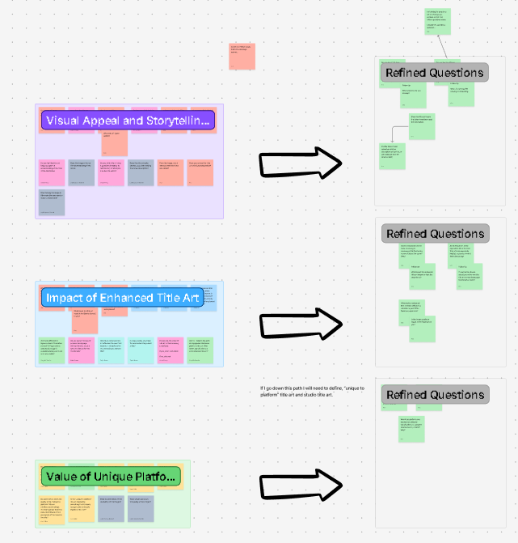

Summary
The goal of this research was to understand how title art style and layout affect user perception and comprehension, especially when artwork is used across multiple contexts. I evaluated visual appeal, layout impact, and readability using participant surveys and Feng-GUI eye-tracking artifacts to highlight attention risks.
My Role
As the UX Researcher, I owned the end-to-end research workstream:
- Reviewed prior title art research and stakeholder concerns to define gaps
- Designed a multi-part study in UserZoom (question wording, order, and tasks)
- Documented the plan and maintained testing documentation
- Analyzed qualitative feedback + quantitative patterns
- Produced reporting for stakeholders and presented findings
- Ran Feng-GUI tests to support readability and attention insights
A key learning for me was recognizing when I needed a design partner to create polished, controlled designs so we could test variations.
The Challenge
The biggest challenge was aligning new research with existing evidence. I had to review prior title art research, understand why stakeholders wanted platform-specific art used broadly, and identify where new studies could clarify the decision.
When sharing results, I received pushback that the order/wording of questions may have influenced reactions. I also had to manage intercept survey volume (pushing distribution to collect enough data) while filtering out responses that didn’t answer questions and instead included insults directed at the researcher (me).
Study approach
Method
- Type: Surveys + unmoderated testing (UserZoom)
- Focus areas: visual appeal, layout impact, and readability
- Artifacts: platform-specific vs. studio standard examples + placement contexts
- Analysis: qualitative themes, quantitative patterns, and Feng-GUI eye-tracking outputs
What participants evaluated
- Platform-specific title art (what STARZ showed in the app)
- Studio standard title art (baseline / comparison)
- Where platform-specific title art is appropriate (detail page, carousel, thumbnail)
Why this mattered
Stakeholders needed clearer evidence on when platform-specific title art helps the experience and when it creates readability or attention tradeoffs that could impact browsing and selection behavior.
Question development & synthesis
This FigJam shows the stakeholder and researcher questions collected during kickoff. I synthesized them into themes, refined them into survey sections, and ordered them to support a consistent participant flow. (This is included to show the reasoning behind how the questions were built.)
Click to enlarge. You can also view the full FigJam board.
View Full FigJam BoardKey findings
Visual appeal favored “world-building” art
Participants tended to prefer artwork that felt immersive and supported the story world, but preference alone wasn’t enough if the title became hard to read.
Readability issues became the deciding factor
Across contexts, readability and quick recognition mattered, particularly in smaller formats like thumbnails and carousel tiles.
Eye-tracking showed attention being pulled away
Feng-GUI artifacts indicated that strong graphical elements often drew focus away from the title text, creating a risk that users miss or misread what they looked at.
Placement context changed what “works”
The same artwork could feel effective on a detail page but become harder to interpret in carousel or thumbnail contexts where users scan quickly.
Recommendations delivered
Prioritize readability as a baseline requirement
Treat title text clarity as non-negotiable across placements (especially thumbnail and carousel), then evaluate visual appeal within those constraints.
Use platform-specific art selectively by context
Recommend context-based usage (detail page vs. carousel vs. thumbnail) rather than applying platform-specific art universally.
Partner with design for controlled test stimuli
Create consistent, comparable variations so feedback reflects the artwork differences, not inconsistent layouts or presentation quality.
Use research as a decision log (even if not acted on immediately)
Document findings so teams can return later when priorities shift and reevaluate whether broad platform-specific use is worth the tradeoffs.
Reflection
Research is valuable even when stakeholders don’t apply every insight right away. This project reinforced that strong documentation and clear evidence can become a reference point later, when teams re-evaluate whether platform-specific title art should be used everywhere or only in the contexts where it performs best.